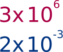

Notación cientifica
En los campos de la electricidad y la electrónica, se presentan tanto cantidades muy pequeñas como muy grandes. Por ejemplo, es común tener valores de corriente eléctrica de sólo unas cuantas milésimas o incluso de unos cuantos millonésimos de ampere, o tener valores de resistencia hasta de varios miles o millones de ohms.
La notación científica proporciona un método conveniente para representar números grandes y pequeños y realizar cálculos que implican tales números. En notación científica, una cantidad se expresa como el producto de un número situado entre \(1\) y \(10\) y una potencia de diez. Por ejemplo, la cantidad \(150,000\) se expresa en notación científica como \(1.5 \times 10^5\), y la cantidad 0.00022 como \(2.2 \times 10^{-4}\).

Ejemplos
Desde el punto de vista eléctrico y electrónico siempre se trata de aplicar un desplazamiento del punto de tres en tres.
| Comun | Notación |
|---|---|
| \(1,200,000\) | \(1.2 \times 10^6\) |
| \(0.000033\) | \(33 \times 10^{-6}\) |
| \(0.010\) | \(10 \times 10^3\) |
| \(5,600\) | \(5.6 \times 10^3\) |
| \(1,000\) | \(1 \times 10^3\) |
Obtener la cifra común de la notacion cientifica.
| Notación | Común |
|---|---|
| \(10 \times 10^{-3}\) | \(0.01\) |
| \(5.3 \times 10^{-6}\) | \(0.0000053\) |
| \(2.3 \times 10^{6}\) | \(2,300,000\) |
| \(5.8 \times 10^{3}\) | \(5,800\) |
| \(9 \times 10^{-9}\) | \(0.000000009\) |
| \(1.2 \times 10^{6}\) | \(1,200,000\) |
| \(47 \times 10^{-9}\) | \(0.000000047\) |
Ejercicios
Aplicar la notación científica a cada una de las cifras.
| Comun | Notacion |
|---|---|
| \(1,000,000\) | |
| \(3,300\) | |
| \(4,700\) | |
| \(0.001\) | |
| \(0.000022\) | |
| \(220,000\) | |
| \(0.005\) | |
| \(0.1\) | |
| \(2,200\) | |
| \(560,000\) |
Obtener la cifra común de la notacion cientifica.
| Notación | Común |
|---|---|
| \(5 \times 10^{3}\) | |
| \(0.5 \times 10^{-3}\) | |
| \(0.5 \times 10^{6}\) | |
| \(2.4 \times 10^{9}\) | |
| \(7.4 \times 10^{-6}\) | |
| \(5 \times 10^{3}\) | |
| \(6.2 \times 10^{-9}\) |